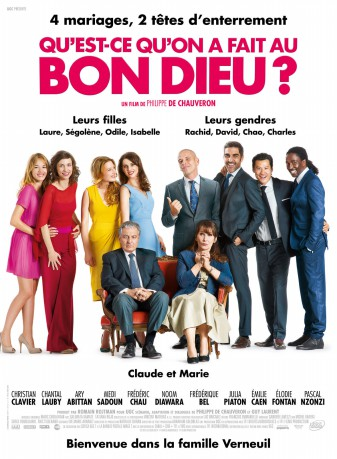
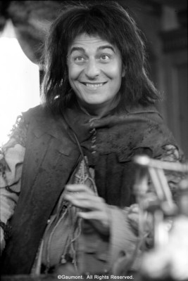
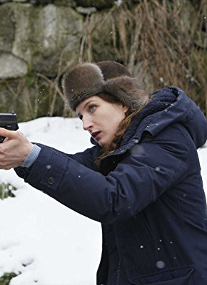
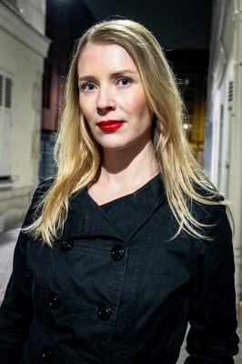

#8220 Monsieur Claude und seine Töchter
 
 IMDB-Wertung: 7.0 / 10
IMDB-Wertung: 7.0 / 10  Metascore: 0
Metascore: 0 
The Verneuils are Catholic. They are also a well-off, well-educated , well-intentioned, well-thought of couple. Everything would be for the best in the best of worlds if three of their daughters had not married three young men... of different religions and origins. So, the day their fourth girl tells them that she is going to marry a Catholic they are on cloud nine...
verschieben zu Dilogie X:\2-Dilogie(G-M)\Monsieur Claude
Jahr: 2014
Dauer: 96 Minuten
FSK: 0
Land: Frankreich Studio: Neue Visionen FilmverleihTonspuren:
Untertitel: Deutsch,
Auflösung: 1080p (1920x1040) Größe: 7270 MB
Genre: Komödie
Regisseur: Philippe de Chauveron
Drehbuch: Philippe de Chauveron
Soundtrack: Marc Chouarain
Darsteller:
-  Christian Clavier als Claude Verneuil
- Noom Diawara als Charles Koffi
 Frédérique Bel als Isabelle Verneuil épouse Benassem
Frédérique Bel als Isabelle Verneuil épouse Benassem-  Julia Piaton als Odile Verneuil épouse Benichou
 Elie Semoun als Le psy
Elie Semoun als Le psy Jassem Mougari als Le lascar au Palais de justice
Jassem Mougari als Le lascar au Palais de justice Nicolas Beaucaire als Le médecin de Chinon
Nicolas Beaucaire als Le médecin de Chinon- Isabel McCann als L'hôtesse de l'air
-  Audrey Quoturi als Touriste aéroport d'Abidjan (uncredited)
- Chantal Lauby als Marie Verneuil
- Ary Abittan als David Benichou
- Medi Sadoun als Rachid Benassem
 Frédéric Chau als Chao Ling
Frédéric Chau als Chao Ling- Émilie Caen als Ségolène Verneuil épouse Ling
- Élodie Fontan als Laure Verneuil
- Pascal N'Zonzi als André Koffi
- Salimata Kamate als Madeleine Koffi
- Tatiana Rojo als Viviane Koffi
- Loïc Legendre als Le curé de Chinon
- David Salles als Le gendarme de Chinon
 Nicolas Wanczycki als Le banquier
Nicolas Wanczycki als Le banquier- Frédéric Saurel als Le pâtissier de Chinon
- Nicolas Buchoux als Xavier Dupuy-Jambard
- Catherine Giron als Josiane,- la bonne des Verneuil
- Axel Boute als La racaille en garde à vue
- Roland Menou als Gérald - le wedding-planner
- Philippe Bertin als Jean-Jérôme dit Jean-Jé
- Isaac Sharry als Le rabbin
- Lassâad Salaani als Le boucher musulman
- Michel Emsalem als Le boucher cacher
- Xiaoxing Cheng als Le patron du restaurant chinois
- Jennifer Kerner als L'actrice rousse
- Hugues Martel als Le maire de Chinon
- Thierry Angelvi als Le photographe à la mairie de Chinon
- Nicolas Mouen als Le professeur de zumba
- Benoît Berthon als Le contrôleur SNCF
- Lyron Darmon als Benjamin Benichou
- Selim Draoui als Lucas Benassem
- Eugénie You als La première jumelle Ling
- Lucie You als La seconde jumelle Ling
- David Benhamou als A guest at the party (uncredited)
Datei: X:\2014(G-M)\Monsieur Claude und seine Töchter (2014, FSK0, 1920x1040).mkv seit 07.02.2018
Festplatte: HD 2013(I-Z)-2014(A-Z)
 Es gibt insgesamt 136 Filme in der Gruppe '2014(G-M)'
Es gibt insgesamt 136 Filme in der Gruppe '2014(G-M)'